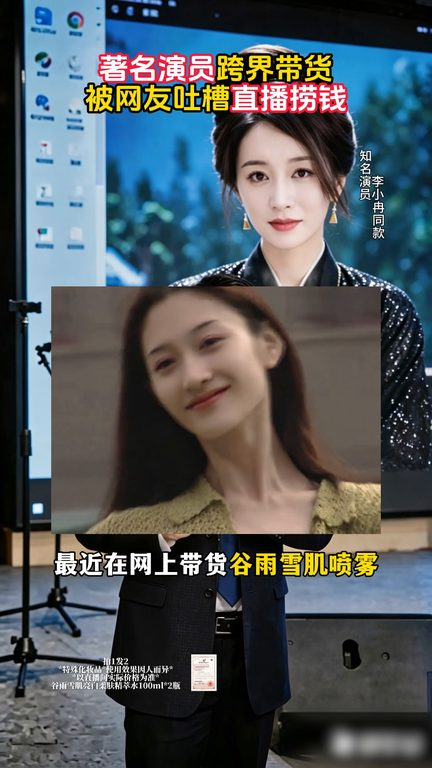
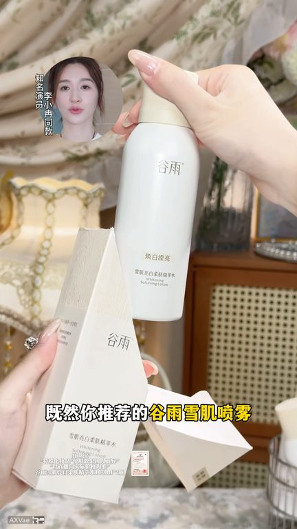
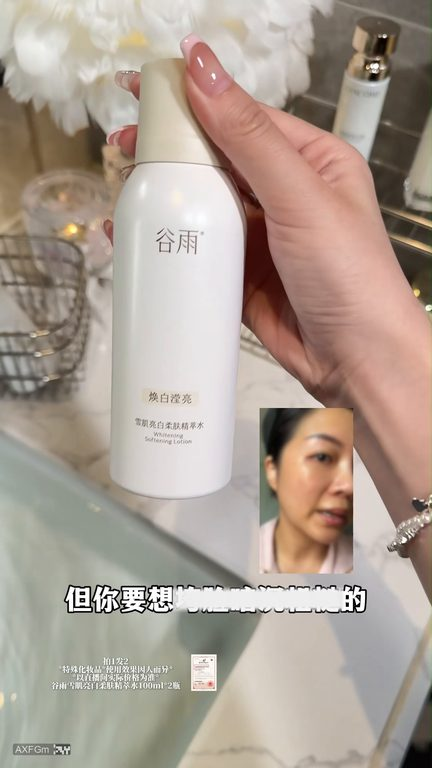
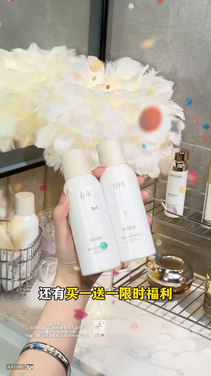

TOP 1 · 代表素材深度拆解
核心放量 强点击
视频为原始素材 HTTPS 链接；点击后加载，建议在网络环境良好时播放。
30.3万素材消耗
3.26%CTR
29.4%类目消耗占比
+1.52pp较类目均值
表现判断
该素材是类目内第 1 名，属于“核心放量”；CTR 高于类目均值。消耗体现承接规模，CTR 体现首屏与定向效率，两项应结合判断，不能仅以单指标下结论。
表达标签
口播三段式证据
开场钩子大家听说了吗著名演员李小冉最近在网上带货骨鱼雪鸡喷雾没想到被网友吐槽演员怎么能带货然而他的一番话却让网友拍手叫好我们听听他怎么说我绝对不会为了赚那一天直播的钱然后把自己的一辈子搞垮
中段论证真的是瞬间点醒了我他说既然你推荐的骨鱼雪鸡喷雾这么好用为什么不免费拿出来一些给那些真正需要他的人去体验一下然后我和总监商量直接打五折为了这次重粉活动我拿出一万单的鸣额给大家送福利一年就这么一次错过可就没有了我想把这个冰喷送给所有25岁以上的女生如果你开始暗沉发黄了听我的用冰喷他不用调不用配洗完脸直接喷我全网邀请你们这两年断牙式暗沉发黄的来试试如果你脸蛋太白
结尾转化但你要是垮脸暗沉粗糙的你就早晚坚持用它是这种幻亮冷雾的黑科技暗压瞬间变水雾一喷去黄一喷补水不用手涂非常方便一瓶就能代替你的水乳精华面霜很适合那些没时间护肤又懒得护肤的姐妹还想要皮肤好用它就行了幸好159一瓶的时候你没买现在骨鱼鼠气大醋还有买一送一现实福利赶紧来直播间看看
有效点
- CTR 3.26% 高于类目均值 1.73%，开场或人群指向具备点击优势
- 口播包含明确到手机制或直播间指令，转化路径较完整
迭代动作
- 保留当前高效钩子，复制 3 个变量版本：人物、首句和首帧分别单变量测试
- 中段每 5–8 秒补一次画面变化或证据点，避免同景口播造成信息疲劳
- 复核功效、绝对化及价格稀缺措辞；增加适用边界和效果因人而异提示
合规关注

钩子建立 · 2.9s

场景/问题展开 · 21.7s

卖点证据 · 49.9s

转化收口 · 68.8s
查看完整口播摘要
大家听说了吗著名演员李小冉最近在网上带货骨鱼雪鸡喷雾没想到被网友吐槽演员怎么能带货然而他的一番话却让网友拍手叫好我们听听他怎么说我绝对不会为了赚那一天直播的钱然后把自己的一辈子搞垮你们不会后悔的因为我玄评很严格今天我老公跟我说了一句话真的是瞬间点醒了我他说既然你推荐的骨鱼雪鸡喷雾这么好用为什么不免费拿出来一些给那些真正需要他的人去体验一下然后我和总监商量直接打五折为了这次重粉活动我拿出一万单的鸣额给大家送福利一年就这么一次错过可就没有了我想把这个冰喷送给所有25岁以上的女生如果你开始暗沉发黄了听我的用冰喷他不用调不用配洗完脸直接喷我全网邀请你们这两年断牙式暗沉发黄的来试试如果你脸蛋太白你就每天晚上喷一喷但你要是垮脸暗沉粗糙的你就早晚坚持用它是这种幻亮冷雾的黑科技暗压瞬间变水雾一喷去黄一喷补水不用手涂非常方便一瓶就能代替你的水乳精华面霜很适合那些没时间护肤又懒得护肤的姐妹还想要皮肤好用它就行了幸好159一瓶的时候你没买现在骨鱼鼠气大醋还有买一送一现实福利赶紧来直播间看看